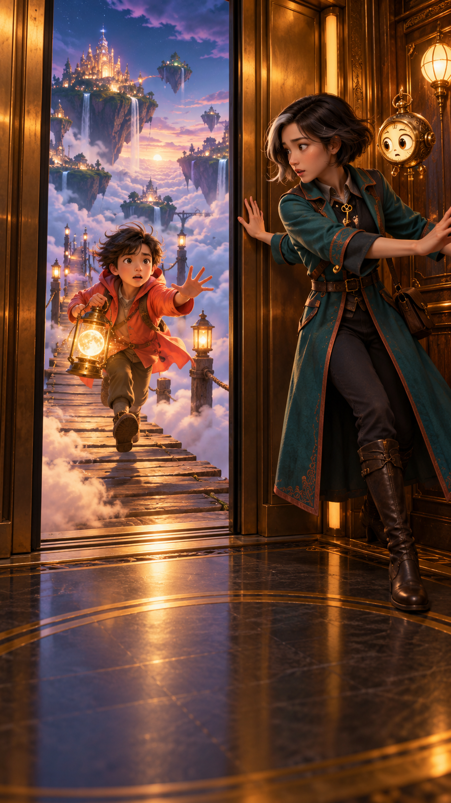

SAY IT WITH THE STORY · 跟着故事开口
今天学会这一句
Hold the door!
请帮我扶住门！
听一遍 · 留给你跟读
TRY ANOTHER · 换个说法
Hold the elevator, please!
请帮我等一下电梯！
零号电梯
ELEVATOR ZERO · 01
诺亚 · NOAH
Hold the door!
快帮我扶住门！
岚 · LAN
I've got it! Keep running!
我扶住了！快跑！
蒂克 · TICK
Three... two...
三……二……
诺亚 · NOAH
My sister's night-light went out.
我妹妹的小夜灯灭了。
岚 · LAN
Is that a moon?
那是一颗月亮吗？
诺亚 · NOAH
A little one. She's scared of the dark.
一颗小月亮。她怕黑。
蒂克 · TICK
Next stop: her island!
下一站：她住的小岛！
诺亚 · NOAH
Tick, hold the door!
蒂克，帮我扶住门！
妹妹 · SISTER
You brought the moon!
你把月亮带来了！
诺亚 · NOAH
Just for you.
专门给你的。